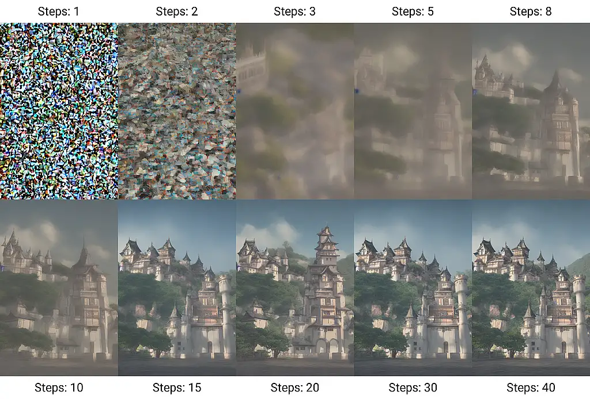

Jak funguje generování obrázků
Difuzní modely, jako například Stable Diffusion, generují obrázek pomocí odstraňování šumu.
Začnou s náhodným šumem, a postupně odstraňují šum tak, aby výsledný obrázek co nejvíc odpovídal zadanému popisu.
Trénovací data se jednoduše vytvoří opačným procesem: do existujícího obrázku, ke kterému máme textový popisek, postupně přidáváme náhodný šum. Získáme tak sadu obrázků obsahujících víc a víc šumu.
Když pak pro trénování modelu pořadí obrázků otočíme, můžeme model naučit z obrázku šum postupně odstraňovat.

Difuzní modely, jako například Stable Diffusion, generují obrázek pomocí odstraňování šumu.
Začnou s náhodným šumem, a postupně odstraňují šum tak, aby výsledný obrázek co nejvíc odpovídal zadanému popisu.
Trénovací data se jednoduše vytvoří opačným procesem: do existujícího obrázku, ke kterému máme textový popisek, postupně přidáváme náhodný šum. Získáme tak sadu obrázků obsahujících víc a víc šumu.
Když pak pro trénování modelu pořadí obrázků otočíme, můžeme model naučit z obrázku šum postupně odstraňovat.